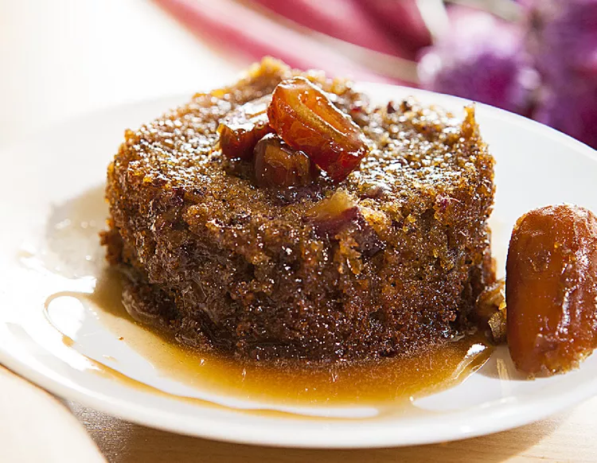

Sticky Toffee Pudding

Description:
This recipe is from the All Recipes website. Sticky toffee pudding is a classic British dessert that's easier to make than you think.
Prep Time: 30 minutes
Cook Time: 1 hour
Servings: 8
Ingredients:
- Pitted dates
- Brewed tea
- sugar
- Unsalted butter
- Eggs
- Flour
- Baking powder
- Baking soda
- Vanilla extract
- Espresso coffee granules
- Golden syrup
- Heavy cream
Steps:
- Combine dates and tea in a bowl; set aside to soak for 15 minutes.
- Preheat the oven to 350 degrees F (180 degrees C). Grease an 8-inch round cake pan and line with parchment paper.
- Cream 3/4 cups plus 2 tablespoons sugar and butter until light and fluffy. Beat in eggs, one at a time, mixing well after each addition. Sift in flour and baking powder and fold into the mixture.
- Add baking soda, vanilla, and espresso granules to the date-tea mixture. Add mixture to the batter and stir to produce a loose, soft, dropping consistency. Pour into the prepared pan.
- Bake in the preheated oven until a skewer inserted in the center comes out clean, 1 to 1 1/2 hours.
- When pudding is almost finished baking, combine 1/2 cup plus 1 tablespoon sugar, 3/4 cup plus 1 tablespoon brown sugar, 3/4 cup plus 1 tablespoon golden syrup, and butter for the sauce in a heavy saucepan over low heat until melted. Simmer for 5 minutes, then remove from heat. Gradually stir in cream and vanilla. Return to the heat and stir until smooth, 2 to 3 minutes.
- Remove pudding from the oven. Spoon a little sauce onto each serving plate. Place a portion of pudding on top, then pour over more sauce. Serve remaining sauce on the side.